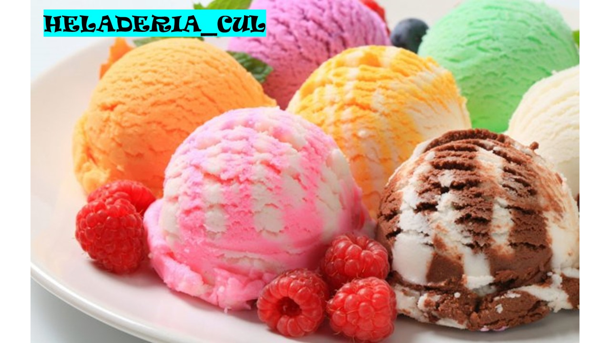

En su forma más simple, el helado o crema helada es un alimento
congelado que por lo general se hace de productos lácteos tales como
leche o crema.
Generalmente se endulza con azúcar, edulcorantes o miel. Típicamente
se le añaden otros ingredientes, tales como yemas de huevo, frutos
secos, frutas, chocolate, galletas, además de saborizantes, aditivos
y estabilizantes.
Aunque el término crema helada se usa algunas veces para
identificar a los postres congelados en general, usualmente está
reservado para aquellos postres congelados hechos con un alto
porcentaje de grasa láctea.
TIPOS HELADOS
Aunque el término crema helada se usa algunas veces para identificar a los
postres congelados en general, usualmente está reservado para aquellos postres congelados hechos con un alto
porcentaje de grasa láctea.
Las definiciones típicas para los postres congelados son las siguientes:
| Crema batida helada - Helado de crema | Helado | Natilla Congelada | Sorbete | Helado de agua | Pop - Granizado |
|---|---|---|---|---|---|
| Grasa lactea | 10% menos de grasa lactea | 10% mas de grasa lactea | Elaborado con zumo | Sin lacteos | Hecho con hielo finamente desmenuzado |
| Grasa vegetal | Menor contenido en azucar | Tiene yema de huevo | Elaborado cno pure de frutas | Sin agua, sin azuzar | Se le agrega esencias |
| % grasa lactea varia | menos contenidos en enducolantes | Considerada crema helada por la > cantidad de grasa | 0% de grasa lactea | Sin frutas o sabores | Jugo de fruta o bebida alcoholica |
Atendiendo al criterio de su forma de servirlos se tiene:
Polo o paleta: Helado hecho a base de agua con un palito plano atravesado de forma similar a una
piruleta. En países como Venezuela se denomina posicle (si es a base de leche y con cobertura de chocolate se le
llama pastelado).
Barquilla: Helado cremoso servido en un cono de hojaldre comestible. Cuando se sustituye dicho cono por
un recipiente se hace llamar tinita (principalmente en Venezuela).
De vasito: Se sirve en envases similares a vasos desechables. Por lo general suelen ser helados cremosos
en envases de cartón parafinado que se consumen con una pequeña paleta de madera a tal efecto.
Copa: Puede servirse en un recipiente hecho a base de hojaldre (el cual es comestible de forma similar al
cono) o bien en una copa de cristal.
HELADO casero con 3 INGREDIENTES y de 3 SABORES (en 5 MINUTOS y sin máquina)
🍧😍🍨
En este espacio veremos como prepara un helado en casa sin requerir de maquina y te tantos ingredientes en el
menor tiempo.
Para compartir en familia.
Ingredientes para cada sabor:
500 ml de nata, crema de leche o crema para batir (2+1/2 tazas)
400 ml de leche condensada (2 tazas o 1 lata).
El sabor que quieras darle:
Para el de chocolate: 2 cucharadas de cacao en polvo.
Para el de dulce de leche: 2 cucharadas de dulce de leche o cajeta.
Para el de cereza: 100 gr de cerezas.
Entretenimiento:
Presione clic en la siguiente imagen y conozca todas las aplicaciones disponibles que te ayudaran a aprender a preparar un helado------------------------------>
Presione clic en la siguiente imagen y disfrutes de los juego de helados Online disponibles para que pueda aprender, como se prepara un helado----------------->